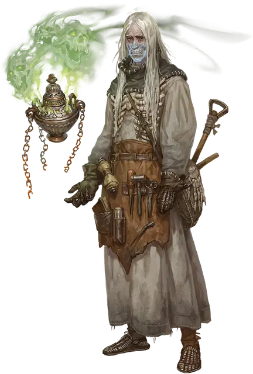

Проповедник Вестников праха
Heralds of Dust Remnant
Маленький или Средний Гуманоид

Класс Доспеха 12 (15 с доспехом мага)
Хиты 45 (7к8 + 14)
Скорость 30 футов
| мод | спас | ||
|---|---|---|---|
| СИЛ | 8 | −1 | −1 |
| ЛОВ | 14 | +2 | +2 |
| ТЕЛ | 15 | +2 | +2 |
| мод | спас | ||
|---|---|---|---|
| ИНТ | 17 | +3 | +3 |
| МДР | 14 | +2 | +2 |
| ХАР | 11 | +0 | +0 |
Навыки Восприятие +4, Магия +5, Скрытность +6
Сопротивление урону некротическая энергия
Чувства пассивное Восприятие 14
Языки Общий плюс три языка
Опасность 4 (1100 опыта)
Бонус мастерства +2
Действия
Мультиатака. Проповедник совершает две атаки Волной некротики.
Волна некротики. . Рукопашная или Дальнобойная атака заклинанием: +5 к попаданию, досягаемость 5 футов или дистанция 120 футов, одна цель. Попадание: 14 (2к10 + 3) урона некротической энергией.
Использование заклинаний. Проповедник накладывает одно из следующих заклинаний, не нуждаясь в материальных компонентах, используя Интеллект в качестве базовой характеристики (Сл спасброска заклинания 13):
• Неограниченно: доспехи мага [mage armor], волшебная рука [mage hand], фокусы [prestidigitation]
• 1/день каждое: порча [bane], переносящая дверь [dimension door], паутина [web]
Бонусные действия
Сдвиг (2/день). Проповедник становится частично бестелесным до тех пор, пока он сохраняет концентрацию на эффекте (как если бы он концентрировался на заклинании). Будучи частично бестелесным, проповедник получает сопротивление дробящему, колющему и рубящему урону.
Описание
Вестники праха — это те, кто стремились к бессмертию с помощью ритуалов, но потерпели неудачу. Посредники и шпионы, эти агенты существуют на половине пути между жизнью и смертью.